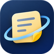

Orbit Memo
Effective date: 2026-11-18 · Publisher: Potato Kim · Contact: bbobbi7@naver.com
개인정보 처리방침
Orbit Memo는 회원 가입이 없고, 광고나 사용 통계를 넣지 않으며, 여러분의 메모를 어떤 서버로도 보내지 않습니다. 이 문서는 앱이 내 PC 안에서 무엇을 다루는지 설명합니다.
저장하는 것
- 직접 적거나 저장한 메모, 넣은 그림과 파일, 앱 설정.
- 글을 잡아서 저장할 때, 그 글을 가져온 창의 제목(“가져온 곳”으로 표시).
- 이 내용은 모두 내 PC의 앱 폴더나, 설정에서 직접 고른 폴더에만 저장됩니다. 구글 드라이브 같은 동기화 폴더를 고르면 그 서비스가 파일을 동기화하며, 그 서비스의 방침이 적용됩니다.
- 비밀 메모는 이 PC의 윈도우 계정으로 암호화되어 저장됩니다.
키보드
앱은 단축키를 알아보기 위해 키 입력을 살펴봅니다. 단축키인지 확인하는 데에만 쓰며, 입력한 키를 기록하거나 저장하거나 보내지 않습니다. 설정에서 고른 프로그램에서는 단축키를 아예 그 프로그램에 넘깁니다.
클립보드와 화면 캡처
- 단축키를 길게 눌러 글을 저장할 때만, 고른 글을 복사해 한 번 읽습니다. 그 밖에는 클립보드를 지켜보지 않습니다. 메모를 고르면 그 메모가 클립보드에 복사됩니다.
- 화면 캡처는 직접 시작했을 때만 합니다. 잘라 낸 부분은 저장했을 때만 메모가 되며, 캡처에 쓰인 화면 사진은 다음 캡처 때 지워지는 임시 파일로 앱 폴더에만 남습니다.
인터넷
앱은 스스로 인터넷에 연결하지 않습니다. 메모 속 주소를 열면 기본 브라우저가 열리고, 그 브라우저의 방침이 적용됩니다. 앱 화면은 윈도우에 들어 있는 Microsoft Edge WebView2로 그려지며, WebView2는 윈도우 설정에 따라 Microsoft에 진단 데이터를 보낼 수 있습니다.
지우기
메모는 앱에서 언제든 지울 수 있고, 휴지통의 메모는 3일 뒤 완전히 지워집니다. 앱을 제거하면 앱 폴더의 메모와 설정도 함께 지워집니다(직접 고른 다른 폴더는 그대로 남습니다).
어린이
앱은 누구의 개인정보도 모으지 않으므로 어린이의 정보도 모으지 않습니다.
바뀔 때와 문의
이 방침이 바뀌면 이 페이지와 시행일을 고칩니다. 궁금한 점은 bbobbi7@naver.com 로 보내 주세요.
Privacy Policy
Orbit Memo has no sign-up, no ads and no usage analytics, and it never sends your notes to any server. This page explains what the app handles on your own PC.
What is saved
- The notes you write or save, the pictures and files you add, and the app settings.
- When you save selected text, the title of the window it came from (shown as its source).
- All of this is kept only in the app's folder on your PC, or in a folder you choose in the settings. If you choose a synced folder such as Google Drive, that service syncs the files and its own policy applies.
- Secret notes are encrypted with your Windows account on this PC.
Keyboard
The app looks at key presses only to recognise its shortcut. It does not record, store or send what you type. In programs you choose in the settings, the shortcut is left entirely to that program.
Clipboard and screen capture
- Only when you hold the shortcut to save a selection does the app copy that selection and read it once. It does not watch the clipboard otherwise. Picking a note copies that note to the clipboard.
- A screen capture happens only when you start one. The part you cut out becomes a note only if you save it; the screen picture used for the capture is a temporary file in the app's folder, replaced at the next capture.
Internet
The app does not connect to the internet by itself. Opening an address from a note opens your default browser, whose own policy applies. The app's screens are drawn with Microsoft Edge WebView2, part of Windows, which may send diagnostic data to Microsoft according to your Windows settings.
Deleting
You can delete notes at any time; notes in the trash are deleted for good after 3 days. Uninstalling the app removes the notes and settings in the app's folder (another folder you chose is left as it is).
Children
The app collects no one's personal information, children's included.
Changes and contact
If this policy changes, this page and its effective date will be updated. Questions: bbobbi7@naver.com
プライバシーポリシー
Orbit Memo には会員登録、広告、利用状況の分析がなく、メモをどのサーバーにも送りません。このページでは、アプリがあなたの PC の中で扱うものを説明します。
保存するもの
- あなたが書いた・保存したメモ、追加した画像とファイル、アプリの設定。
- 選んだ文章を保存したときの、元のウィンドウのタイトル（「取得元」として表示）。
- これらはすべて PC 上のアプリのフォルダー、または設定で選んだフォルダーにだけ保存されます。Google ドライブなどの同期フォルダーを選んだ場合は、そのサービスがファイルを同期し、そのサービスのポリシーが適用されます。
- シークレットメモは、この PC の Windows アカウントで暗号化して保存されます。
キーボード
アプリはショートカットを認識するためだけにキー入力を確認します。入力した内容を記録・保存・送信することはありません。設定で選んだアプリでは、ショートカットをそのアプリにそのまま渡します。
クリップボードと画面キャプチャ
- ショートカットを長押しして文章を保存するときだけ、選んだ文章をコピーして一度読み取ります。それ以外にクリップボードを監視することはありません。メモを選ぶと、そのメモがクリップボードにコピーされます。
- 画面キャプチャは、あなたが開始したときだけ行います。切り取った部分は保存したときだけメモになり、キャプチャに使った画面の画像は次のキャプチャで置き換えられる一時ファイルとしてアプリのフォルダーにだけ残ります。
インターネット
アプリが自らインターネットに接続することはありません。メモ内のアドレスを開くと既定のブラウザーが開き、そのブラウザーのポリシーが適用されます。アプリの画面は Windows に含まれる Microsoft Edge WebView2 で表示され、WebView2 は Windows の設定に応じて Microsoft に診断データを送信する場合があります。
削除
メモはいつでも削除できます。ゴミ箱のメモは 3 日後に完全に削除されます。アプリをアンインストールすると、アプリのフォルダー内のメモと設定も削除されます（ご自身で選んだ別のフォルダーはそのまま残ります）。
お子様について
アプリはお子様を含め、誰の個人情報も収集しません。
変更とお問い合わせ
このポリシーを変更する場合は、このページと施行日を更新します。お問い合わせ: bbobbi7@naver.com